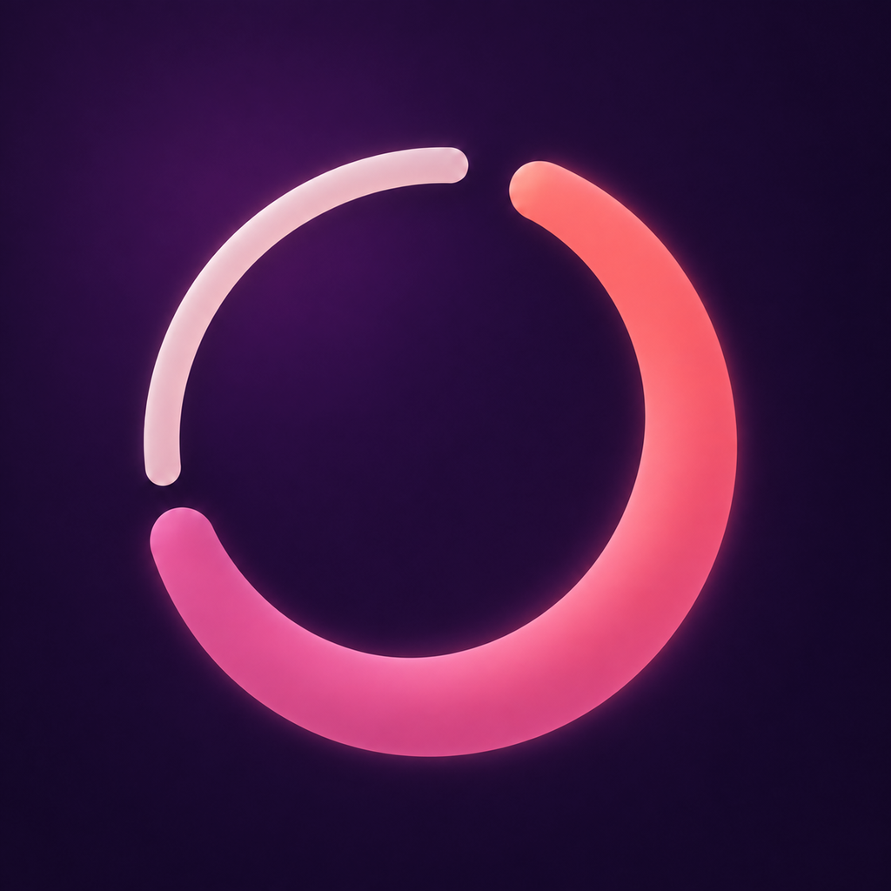

Cadenzia
Recovery für Frauen auf iPhone und Apple Watch. Jeden Morgen wissen, was dein Körper heute kann – mit deinem Zyklus als Kontext. Alles bleibt auf deinem iPhone. Einmal kaufen statt Abo.
Recovery for women on iPhone and Apple Watch. Know every morning what your body can do today – with your cycle as context. Everything stays on your iPhone. Buy once, no subscription.
Kein Konto, kein Server, kein Tracking. No account, no server, no tracking.
Cadenzia ist eine Wellness-App, kein Medizinprodukt. · Kontakt: nathan.seefelder@googlemail.com